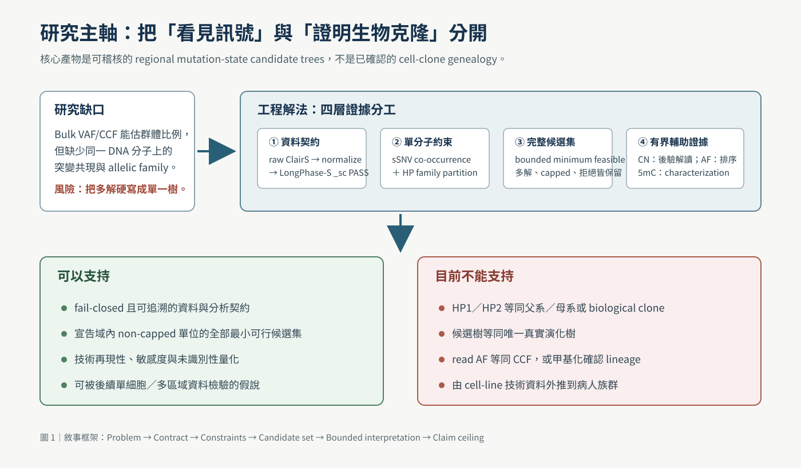
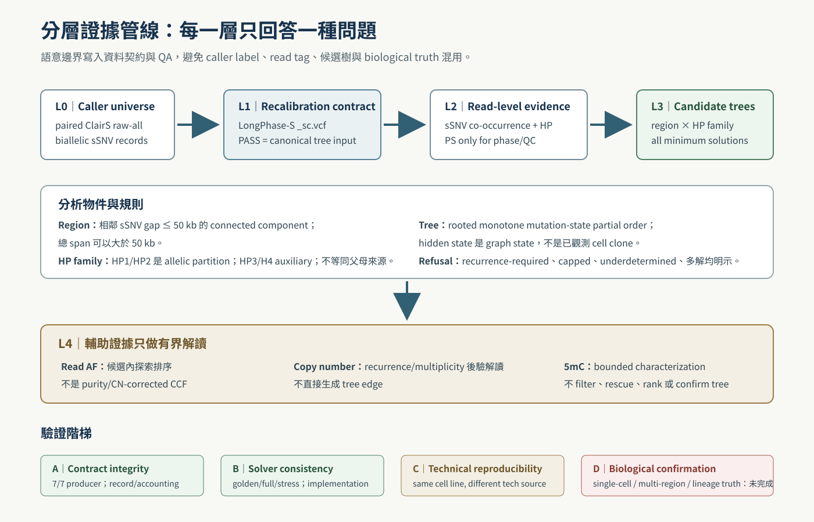
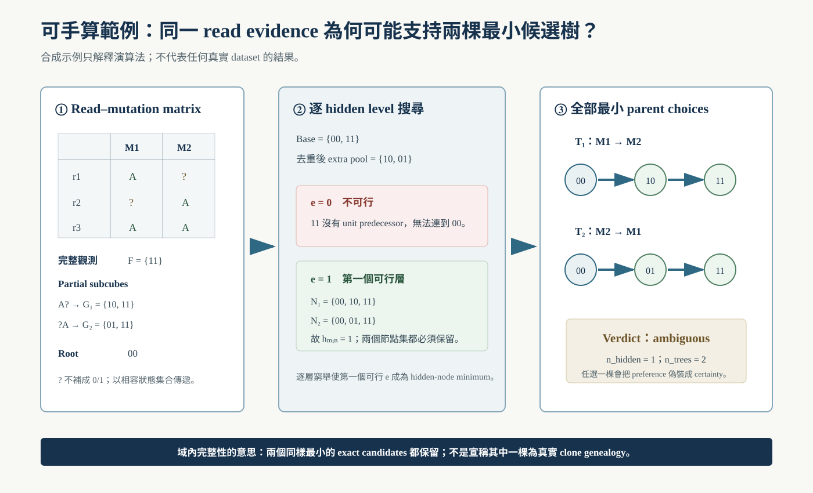
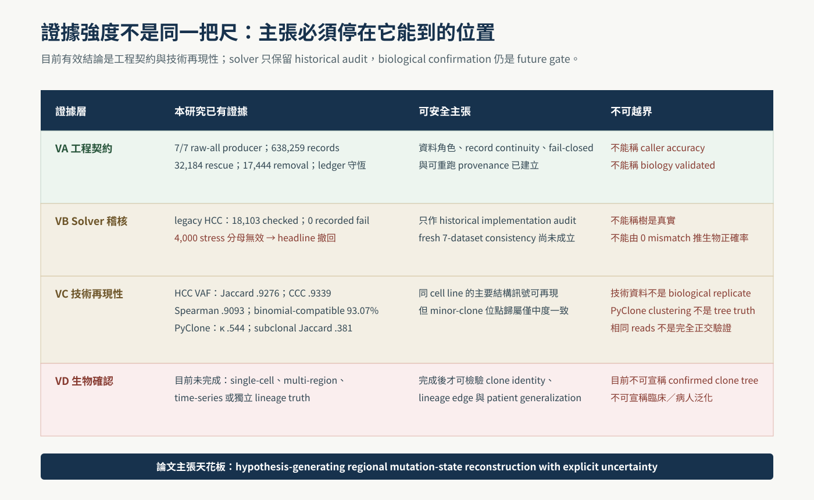
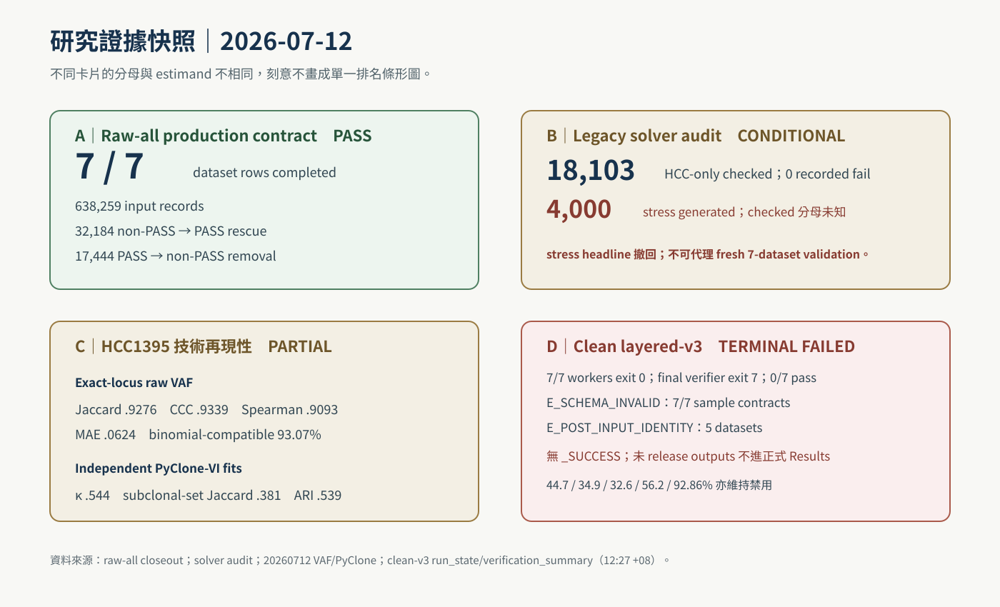
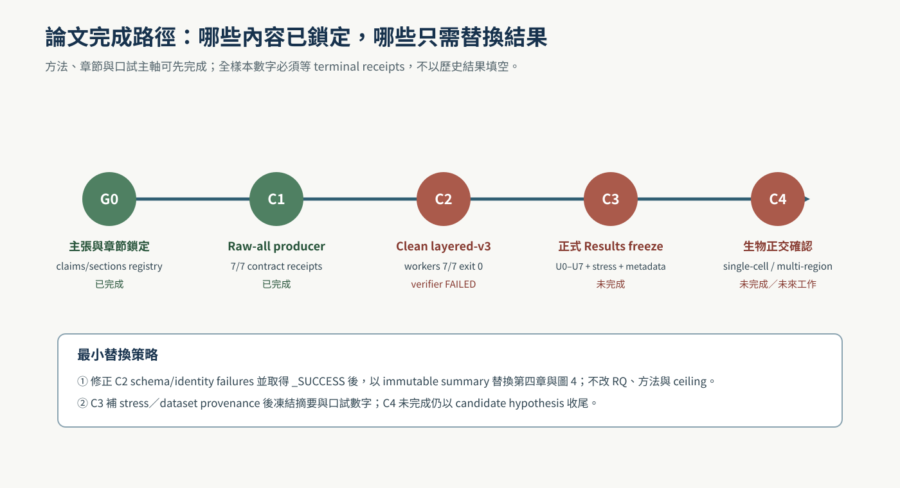

MASTER'S THESIS · REVIEW DRAFT
奈米孔長讀長資料之可稽核區域突變狀態候選樹重建
整合體細胞單倍型標記與單分子突變共現
Auditable Regional Mutation-State Candidate-Tree Reconstruction from Nanopore Long Reads: Integrating Somatic Haplotagging and Single-Molecule Mutation Co-occurrence
學校／系所：［待填］
學位：碩士
研究生：［待填］
指導教授：［待填］
版本日期：2026-07-12
Build：6067568
版本聲明： 本檢視版對應同資料夾 Markdown source。Raw-all producer 已 7/7 完成；clean layered-v3 的 7 個 workers 亦均 exit 0，但 final verifier exit 7、terminal FAILED，沒有 aggregate _SUCCESS。故全樣本 topology rates 明示為 blocked，不以未 release outputs 或 historical percentages 代填；正式口試／submission readiness 目前為 NO-GO 。
摘要
中文摘要
本研究建立一套把「單分子 evidence」與「生物 clone confirmation」分開的可驗證工程框架。
腫瘤 bulk sequencing 的 VAF 同時受到細胞族群比例、正常細胞混入、copy number、mutation multiplicity 與抽樣誤差影響。ONT 長讀可在同一 DNA 分子上同時觀察 sSNV、相位、haplotype 與 modified-base tags，提供群體統計以外的物理連結；但若未區分 caller label、HP family、mutation-state candidate tree 與 biological clone，容易把演算法輸出過度解讀成真實家譜。
本研究以 paired ClairS normalized raw-all biallelic sSNVs 作 LongPhase-S 完整 recalibration universe，以 same-run _sc.vcf PASS 作 primary tree input。分析單位為 region × mutation-bearing HP1/HP2 family；HP1/HP2 只是 homologous haplotypes 的 allelic partition。對通過預先宣告資料完整性與計算界線的 unit，由 read–mutation matrix 建立 observed terminal states，並在 rooted monotone Boolean state space 中列舉全部 minimum feasible mutation-state candidate trees；域外單位明示 capped。CN 只作後驗解讀、read AF 只作候選內探索排序、methylation 只作 bounded characterization。
7 / 7 raw-all producer contract
.9276 / .9339 HCC VAF Jaccard / CCC
0 / 7 fresh final verifier pass
Legacy HCC1395 artifact 的 18,103 個 checked units 為 0 recorded fail，但不是 fresh 7-dataset validation；舊 4,000-case stress summary 因 capped cases 被直接計入 pass、未保存 checked/skipped 分母，已撤回正向 claim。PyClone-VI independent fits 的 clonal/subclonal kappa 為 .544，subclonal mutation-set Jaccard 為 .381。Fresh full-scope workers 雖 7/7 exit 0，final verifier 卻 exit 7、0/7 pass，故本研究只支持待驗證的 regional hypotheses，不支持已確認的 biological clone genealogy。
關鍵詞： 奈米孔定序、腫瘤內異質性、體細胞單倍型標記、單分子突變共現、區域突變狀態樹、有界完整解列舉、可重現生物資訊、甲基化
ABSTRACT
English Abstract
Bulk variant allele fractions confound cellular prevalence with normal contamination, copy number, mutation multiplicity, and sampling noise. This thesis presents a verifiable, fail-closed framework that uses normalized raw-all paired ClairS records, same-run LongPhase-S recalibration, read-level somatic haplotype evidence, and complete enumeration of regional mutation-state candidate trees.
The primary unit is a genomic region crossed with a mutation-bearing HP1 or HP2 family. Haplotype tags are treated as allelic partitions rather than clone labels. Every minimum feasible candidate tree is retained only for units satisfying predeclared integrity and computational bounds; determined, ambiguous, recurrence-required, underdetermined/incomplete, and capped states remain explicit outcomes. Copy number, read allele fraction, and methylation are restricted to bounded auxiliary roles.
The producer contract completed all seven dataset rows. A legacy HCC1395 artifact recorded zero failures among 18,103 checked units, but it is not a fresh seven-dataset validation. The legacy 4,000-case stress headline is withdrawn because capped cases were counted as passes and checked/skipped denominators were not preserved. HCC1395 technical sources showed high raw-VAF reproducibility, whereas independent PyClone-VI fits showed only moderate reproducibility of minor-clone assignments. All seven fresh workers exited successfully, but the final verifier exited with code 7 and zero of seven datasets passed. The framework therefore supports hypotheses awaiting end-to-end validation, not confirmed biological clone genealogies.
第一章
緒論：長讀增加 evidence，但不自動消除不可識別性
中心命題：同一分子上的突變共現能縮小區域演化的可行解空間；只有保存完整解集合與 refusal reasons，才能避免把 heuristic 當成 biological certainty。
1.1 腫瘤異質性是一個反問題
Bulk sequencing 將多個細胞族群混合後觀察。VAF 是 cellular prevalence、purity、copy number、mutation multiplicity 與 read sampling 的合成量。PyClone、PhyloWGS 與 Pairtree 可從 frequency/CN evidence 推估 clusters 或 global phylogeny，但 single-sample frequencies 通常不足以唯一決定 mutation co-occurrence 或 tree topology。
1.2 長讀提供同一分子的物理連結
LongPhase/LongPhase-S 讓 read-based phase 與 somatic haplotagging 可被納入分析；SAM/BAM 的 MM/ML tags 亦能承載 modified-base evidence。這些 tags 增加可觀察資訊，卻不等同 clone labels 或 lineage truth。
1.3 研究缺口與四個 RQ
如何建立 caller、recalibration、sidecar 與 tree consumer 的 record-level contract？
如何形式化 region × HP-family 並保存全部最小相容候選解？
如何驗證 implementation consistency 而不混稱 biological accuracy？
跨技術來源的 VAF／conditional subclone structure 可再現到何種程度？

圖 1｜研究主軸：把看見訊號與證明 biological clone 分開。 1.4 貢獻與 claim ceiling
貢獻包含 fail-closed input contract、typed analysis ontology、bounded complete candidate enumeration、layered validation 與 bounded multimodal interpretation。本論文的最高主張是 regional mutation-state hypothesis generator；無 single-cell／multi-region truth 時不稱 confirmed clone genealogy。
第二章
背景與相關研究：不同工具處理不同 estimands
2.1 Somatic caller 與 phasing
ClairS 處理 paired long-read somatic small variants；ClairS-TO 與 DeepSomatic tumor-only mode 則處理缺少 matched normal 的不同 evidence regime。LongPhase 提供 small/SV phasing，LongPhase-S 提供 somatic haplotagging、tumor DNA fraction estimation 與 bidirectional recalibration。Caller PASS、PON tag、Verdict 與 benchmark truth 均不可互換。
2.2 完整 HP vocabulary 與語意邊界
LongPhase-S 的完整字串集合為 .、1、2、3、4、1-1、2-1、1-2、2-2。本文以 HP1/HP2 作 primary allelic families；HP3/HP4 與 extended states作 auxiliary。未定向時不稱 paternal/maternal；PS 只作 phase/QC。
2.3 CCF clustering、global phylogeny 與 regional linkage
方法層 輸入 輸出 本文定位
PyClone(-VI) counts + purity + CN cluster / cellular prevalence conditional sensitivity；非 tree truth PhyloWGS / Pairtree VAF/CCF/CN，多樣本較佳 global tree posterior 互補 estimand 本研究 same-molecule states + HP family regional complete candidate set primary method
2.4 Perfect phylogeny 與 missing data
Rooted all-zero model 中，任一對 mutations 不可同時觀察到 10、01、11，本文稱 rooted three-gamete condition。Hidden/Steiner-like states 是連接 terminal states 的數學節點，不是隱藏 clone。一般 unrooted Hamming Steiner NP-completeness 不直接證明本研究 bounded rooted solver 的 complexity。
2.5 Methylation 是 bounded evidence
NanoMethPhase、MethPhaser 與特定 single-cell methylation lineage studies 支持 allele-specific／lineage-associated methylation 可含資訊；它們不證明 bulk ONT methylation 能確認本文 candidate tree。既有 filter/rescue/ranker effect 未穩定泛化，因此本文只保留 characterization。
2.6 本研究的直接新穎性增量
方法層 仍有缺口 本研究新增 不宣稱
Caller／haplotagging 跨工具 record／read identity 可漂移 raw-all → recalibration → sidecar → tree 的 typed fail-closed contract 新的 caller accuracy Bulk CCF／global tree single-sample frequency 不直接觀察同分子共現 HP family 內的 regional read-level constraints 取代 whole-tumor phylogeny Perfect phylogeny／IDP 未綁 production artifacts、cap 與 terminal receipts partial subcubes、bounded complete enumeration、V1–V7 解決 unrestricted Steiner problem Single-best-tree pipeline preference 容易被誤認為 certainty analytical set／count 與 display cap 分離，保留 refusal 排序等於 posterior 或 truth
Novelty delta：本研究新增的是可稽核的域內完整性與拒絕語意，不是 biological accuracy oracle。
第三章
資料、系統與方法：Contract → Constraints → Complete candidates → Refusal

圖 2｜每一層 evidence 只回答一種問題。 3.1 Data scope 與 canonical contract
Scope 為 GRCh38 chr1–22、7 dataset rows／6 cell lines。Canonical chain 是 paired ClairS raw-all → normalization → LongPhase-S → same-run _sc.vcf PASS → tree consumer；ClairS PASS 只作 sensitivity。HCC1395 與 HCC1395_DORADO 共用 biological ID，但現有 artifacts 不足以宣稱 library 或 raw-signal 批次完全獨立。
Dataset Biological ID／角色 CN role 論文用途
HCC1395 HCC1395／ONT canonical SEQC2 measured canonical + technical pair HCC1395_DORADO HCC1395／platform replica same-cell-line sensitivity；非獨立 measurement technical reproducibility COLO829 COLO829／canonical unavailable framework；不作 CCF fit H1437 H1437／canonical SAVANA measured full-scope validation H2009 H2009／canonical SAVANA measured full-scope validation HCC1937 HCC1937／canonical unavailable framework；不作 CCF fit HCC1954 HCC1954／canonical SAVANA measured full-scope validation
Dataset provenance blocker： 正式稿仍需補 7-row public accession、tumor-normal IDs、ONT library/chemistry、basecaller model/version、coverage/read N50、reference hashes 與 caller/runtime table；缺值不由檔名推測。
U0 truth flags absent U4 all-site ledger conserved
U1 record continuity U5 bounded sidecar equivalence
U2 exact tag capture U6 frozen provenance
U3 exact sidecar join U7 atomic lifecycle
FAIL any gate → no _SUCCESS; no historical BAM fallback3.2 Region × HP-family unit
相鄰 sSNV gap ≤50 kb 的 connected component 定義 region；total span 可大於 50 kb。Primary unit 是 dataset × chromosome × region × mutation-bearing HP1/HP2 family。Root-only 是 reference control，HP3/H4 auxiliary 不進 primary denominator。
3.3 Read–mutation matrix
Xu ∈ {0, 1, ?}|Ru | × k
1 表示 ALT support，0 表示 REF support，? 表示 coverage/quality不足。Unique mutation-bearing row patterns 形成 observed terminals；全零向量作 root。
a ≼ b ⇔ ∀j, aj ≤ bj ； h(N)=|N ∖ ({root} ∪ F)|
Full patterns 必須成為 nodes；partial patterns 表成 Boolean subcubes。Extra pool 是所有 full/subcube members 的 subsets 去重後，排除 root 與 full observations。Solver 逐 hidden-node level 窮舉 coverage + unit-flip-closed node sets，於第一個可行 level 停止，再列舉所有 unit-predecessor parent choices。這只在宣告 pool、hidden/budget caps 與 analytical cap=0 下提供條件式完備性。
3.4 Bounded complete enumeration
Bound Frozen value 意義
Mutation dimension MAX_SNV=8 Boolean state space ≤256 Hidden search extra_cap=4 超出即不宣稱 complete Per-level budget 150,000 超出即 capped Analytical cap 0 不截斷 analytical candidates Display cap 32 只限 UI，不得當分析集合 Verification every unit V1–V7；V4/V5 另一路徑重算
for e = 0..4:
if combinations(pool,e) > 150000: return CAPPED
retain every node set satisfying full/partial coverage + unit closure
if any feasible set exists: stop at minimum e
enumerate every legal parent-choice tree for all minimum node sets
run V1–V7; display cap may not truncate the analytical set完整性句型： 只有 input/schema 通過、未觸及任何 cap、candidate set 完整且 V1–V7 通過的 unit，才稱列舉全部最小可行候選樹。

方法範例 A｜兩棵同樣最小的 candidates 都保留，因此 verdict 是 ambiguous。 3.5 Output ontology
狀態 定義 Claim
determined complete/non-capped，恰一個 minimum solution 模型與 evidence 下唯一 candidate ambiguous minimum solutions >1 完整保留多解 recurrence-required 有 recurrence、無 recurrence-free minimum solution rooted compatibility conflict underdetermined／incomplete n_trees=0、set不完整或 required artifact/read support不足 不補成單解 capped 超過 computation cap 計算邊界，不稱無解
3.6 Auxiliary roles 與 validation ladder
Read AF 只在候選內排序；CN 只作 recurrence/multiplicity 後驗解讀；methylation 只作 within-family characterization。Validation 分成 contract integrity、solver consistency、technical reproducibility、biological confirmation。

圖 3｜工程零錯誤、技術再現性與生物確認不是同一證據層。
V1–V7 與 U0–U7 的可稽核定義
Solver check 通過條件
V1 unit-flip edges、每非 root 一個 parent、root-connected、無環 V2 所有 full states 與 partial subcubes 被覆蓋 V3 observed states 為合法 node-set 子集 V4 另一路徑證明較少一個 hidden node 時無可行解 V5 另一路徑重算 analytical tree count；不等同 exact tree-set equality proof V6 class 與 recurrence flags 邏輯一致 V7 determined 必須 one-tree、recurrence-free、non-capped、complete
V4/V5 是同一形式模型的另一程式路徑重算，不是 biological 或 exact tree-set oracle。U0–U7 依序檢查 truth-free production scope、record continuity、tag capture、sidecar join、all-site ledger、bounded sidecar equivalence、frozen provenance 與 atomic lifecycle。
第四章
結果：工程契約已驗證，技術再現性 partial，biological truth 未完成
4.1 Raw-all producer 7/7 PASS
Dataset Input Rescue Removal
HCC1395 134,122 4,592 5,528 HCC1395_DORADO 123,240 5,162 4,404 COLO829 43,014 2,002 740 H1437 83,261 5,168 1,091 H2009 168,638 6,285 2,095 HCC1937 59,161 5,616 3,049 HCC1954 26,823 3,359 537 總計 638,259 32,184 17,444
Rescue/removal 皆非零，證明原 ClairS PASS 不能代理 LongPhase-S canonical tree universe。7/7 只表示 producer contract complete，不表示整個 reconstruction complete。
4.2 Solver legacy audit CONDITIONAL
18,103 legacy HCC checked；0 recorded fail
828 legacy capped/not-applicable
4,000 stress generated；valid checked denominator unknown
0 independent biological tree truths
Claim correction： 18,103 只作 historical HCC implementation audit；legacy stress counter 把 capped case 計為 pass，故「4,000／0 mismatch」headline 撤回。Fresh 7-dataset consistency 尚未成立。
4.3 HCC raw-VAF technical reproducibility PARTIAL
Scope Union Shared Jaccard Spearman CCC MAE
Latest / all caller 82,705 76,721 .9276 .9093 .9339 .0624 Latest / SEQC2 31,429 30,265 .9630 .9170 .9560 .0600
93.07% exact shared loci 落在 simplified binomial 95% difference band，但只有 50.50% loci 的 |ΔVAF|≤.05；主要結構高度一致不代表每位點相同，也不代表 tree accuracy。
4.4 PyClone minor membership 僅中度再現 PARTIAL
Independent-fit metric Main Near-integer CN
ARI .539 .573 NMI .339 .390 Clonal/subclonal κ .544 .577 Subclonal-set Jaccard .381 .411 Hungarian overall 98.29% 98.96%
Overall 98% 被 clonal majority 支配，不能代理 minor reproducibility。PyClone-VI 支持 major backbone 與低 CCF component，但不輸出 tree truth。
4.5 Clean layered-v3 TERMINAL FAILED / BLOCKED
Evidence cutoff：2026-07-12 12:27:13 +08:00。 7/7 sample workers return code 0，但 final verifier return code 7，all_pass=false、0/7 dataset pass。7/7 sample contracts 發生 E_SCHEMA_INVALID；H1437、H2009、HCC1395_DORADO、HCC1937、HCC1954 另有 E_POST_INPUT_IDENTITY。無 _SUCCESS，故未 release outputs 與 44.7%、34.9%、32.6%、56.2%、92.86% historical rates 均不得進正式 Results。

圖 4｜不同 evidentiary endpoints 必須分開報告。
第五章
討論：完整表達不確定性是科學軟體的核心功能
5.1 資料契約本身是研究貢獻
科學軟體最危險的 failure mode 是程式完成但 estimand 已被 silent scope drift 改變。本研究將 raw-all、recalibrated PASS、sensitivity PASS、sidecar、CN、AF、methylation 與 truth resources 型別化；角色不符即 fail-closed。32,184 rescue 與 17,444 removal 具體說明 input contract 會改變研究 universe。
5.2 多解與拒絕不是失敗
Ambiguous、recurrence-required、underdetermined／incomplete 與 capped 反映現有 evidence 的資訊上限。若只保存第一棵 tree，後續「驗證」只會確認早期 heuristic；保存完整 candidate set 才允許真正的獨立 evidence 消歧。
5.3 Technical reproducibility ≠ biological accuracy
HCC1395/DORADO 適合測試同 cell line 的技術來源效應，不是 biological replicates。VAF、HP 與 methylation 多源自同一 reads，也不是完全正交。故本文不使用「三訊號共同確認 clone」的措辭。
5.4 CN、purity 與 multiplicity
E[VAF] ≈ (ρ · f · m) / (ρ · CT + (1−ρ) · CN )
在 ρ、CT 或 mutant multiplicity m 不確定時，read AF 不能直接稱 CCF。缺 reviewed allele-specific CN 的 COLO829/HCC1937 不以 CN=2 代填，展示 fail-closed principle。
5.5 Methylation 的負向結果
早期 methylation filter/ranker cross-validation effect collapse，故主線 retired。保留負向結果可防止 selection bias，並將未來問題改寫為「在獨立 lineage truth 下是否提供增量資訊」，而非再調 threshold。
5.6 限制與下一步
Clean full-sample workers 7/7 完成，但 final verifier terminal FAILED；本稿沒有 final rates。
資料是 6 cell lines，不代表 patient cohort。
Regional candidate tree 不是 whole-tumor genealogy。
Read errors、missingness、gap threshold 與 state cap 需要 sensitivity。
Biological confirmation 需 independent CN/purity、single-cell、multi-region 或 longitudinal evidence。

圖 5｜方法與章節可先鎖定；正式 rates 與 biological confirmation 各有獨立 gate。
第六章
結論：誠實拒絕比強迫單解更接近可驗證科學
本研究把 ONT read-level sSNV co-occurrence 與 somatic haplotagging 轉成一套可稽核的 regional mutation-state candidate-tree framework。
在工程層，系統以 normalized raw-all、same-run LongPhase-S recalibration、all-site ledger、sidecar identity 與 terminal receipts 鎖定資料角色。在演算法層，系統對通過宣告界線的 units 保存全部 minimum feasible candidates，並將 determined、ambiguous、recurrence-required、underdetermined／incomplete、capped 明示為結果。在科學層，現有證據支持主要技術訊號可再現，但不支持唯一真實 clone genealogy。
Final bounded claim：本方法是具 explicit uncertainty 的 regional hypothesis generator；biological clone confirmation 仍需正交 lineage evidence。
參考文獻
核心一手來源
Nowell PC. Clonal evolution of tumor cell populations. Science . 1976. doi:10.1126/science.959840 .
Greaves M, Maley CC. Clonal evolution in cancer. Nature . 2012. doi:10.1038/nature10762 .
Tarabichi M, et al. Practical guide to cancer subclonal reconstruction. Nature Methods . doi:10.1038/s41592-020-01013-2 .
Zheng Z, et al. ClairS. Nature Methods . 2026. doi:10.1038/s41592-026-03152-4 .
Lin JH, et al. LongPhase. Bioinformatics . 2022. doi:10.1093/bioinformatics/btac058 .
Ho et al. LongPhase-S. bioRxiv preprint. doi:10.1101/2025.11.20.689492 .
Gillis S, Roth A. PyClone-VI. BMC Bioinformatics . 2020. doi:10.1186/s12859-020-03919-2 .
Deshwar AG, et al. PhyloWGS. Genome Biology . 2015. doi:10.1186/s13059-015-0602-8 .
Gusfield D. Efficient algorithms for inferring evolutionary trees. Networks . 1991. doi:10.1002/net.3230210104 .
Pe’er I, et al. Incomplete directed perfect phylogeny. SIAM J Comput . doi:10.1137/S0097539702406510 .
Foulds LR, Graham RL. Steiner problem in phylogeny. 1982. doi:10.1016/S0196-8858(82)80004-3 .
Fang LT, et al. SEQC2 benchmark truth. Nature Biotechnology . doi:10.1038/s41587-021-00993-6 .
GA4GH. SAM Optional Fields Specification .
Akbari V, et al. NanoMethPhase. Genome Biology . doi:10.1186/s13059-021-02283-5 .
Fu et al. MethPhaser. Nature Communications . doi:10.1038/s41467-024-49588-0 .
Gaiti F, et al. Epigenetic evolution and lineage histories. Nature . doi:10.1038/s41586-019-1198-z .
本研究 evidence artifacts
InterSubMod/docs/CURRENT_FOCUS.md/big7_disk/liaoyoyo2001/external_validation/_schema/paper_claims.tsvInterSubMod/research/20260710_layered_reconstruction_v2/20260711_ClairS_LongPhaseS_sSNV位點與ReadTag契約稽核_01.mdInterSubMod/output/synthesis/research_rounds/20260711_longphase_s_raw_all_production_sidecars_v2/raw_all_receipt_closeout.jsonInterSubMod/docs/methodology/_assets/20260627_subclone_4axis_teaching/data/full_v4v5_verification_HCC1395.jsonInterSubMod/research/20260710_layered_reconstruction_v2/audit_notes/02_layered_chain_audit.md 與 03_verification_risk_audit.mdInterSubMod/research/20260712_vaf_ccf_subclone_crosssoftware_validation/ 兩份驗證報告
附錄
主張矩陣與 blocked ledger
Claim Evidence Status
Producer contract 7/7 receipts + closeout 可進正文 Legacy solver audit HCC 18,103 checked；0 recorded fail historical only Legacy 4,000-case stress checked/skipped denominator invalid withdrawn Major VAF structure reproducible HCC technical sources technical only Clean full-sample topology rates workers 7/7 exit 0；verifier exit 7、0/7 pass blocked Candidate tree = biological clone 無 lineage truth unsupported
Result freeze 最小條件
先修正 E_SCHEMA_INVALID 與 E_POST_INPUT_IDENTITY，再取得 aggregate _SUCCESS 與 7/7 canonical/sensitivity receipts。
修正 legacy stress counter，保存 generated／checked／capped-skipped／failed 分母並重跑。
U0–U7 全部 PASS；candidate set 未截斷。
補齊 accession、pair IDs、ONT chemistry/basecaller、coverage/N50 與 runtime table。
Immutable summary、SHA-256、稿件 commit 與 number provenance。
摘要、第四章、結論、圖 4 與口試稿同步更新。
在上述條件完成前，舊 44.7%、34.9%、32.6%、56.2%、92.86% 均不得作 final paper result。
Provenance 20260712_碩士論文_01.md · Figures：figures/01–06_*.svgresearch/subclonal-reconstruction-202606@6067568；本稿目錄尚未納入該 commit。